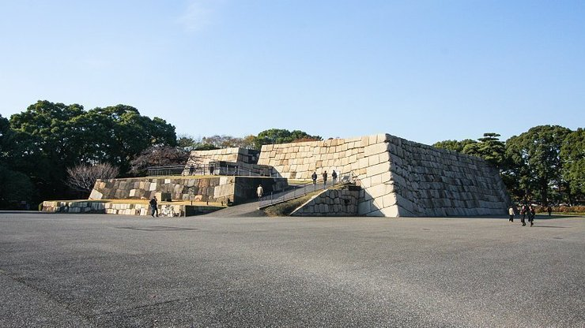
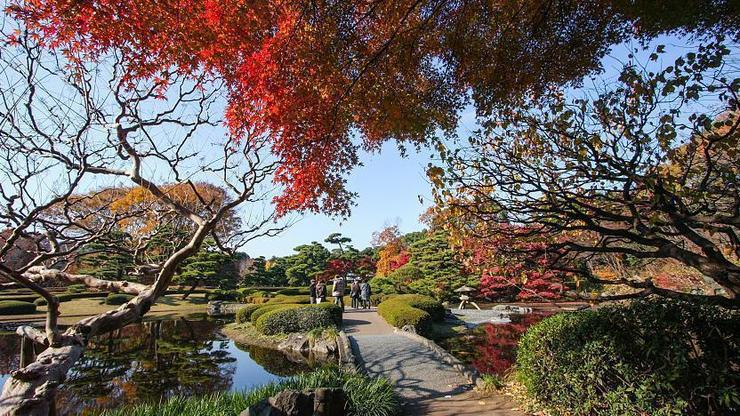

Imperial Palace East Gardens
皇居東御苑
The Imperial Palace East Gardens (皇居東御苑, Kōkyo Higashi Gyoen) are a part of the inner palace area and are open to the public. They are the former site of Edo Castle's innermost circles of defense, the honmaru ("main circle") and ninomaru ("secondary circle"). None of the main buildings remain today, but the moats, walls, entrance gates and several guardhouses still exist.
Edo Castle was the residence of the Tokugawa shogun who ruled Japan from 1603 to 1867. Emperor Meiji also resided there from 1868 to 1888 before moving to the newly constructed Imperial Palace.
A wide lawn and the remaining foundation of the former castle tower can be found on top of the hill, where the castle's innermost buildings once stood. The castle tower was completed in 1638 as the tallest castle tower in Japan's history. But only a few years later in 1657, it was destroyed by citywide fires and has not been rebuilt since.
In place of the castle's former palace buildings in the secondary circle of defense (ninomaru) at the foot of the hill, a nice Japanese-style garden has been created.
